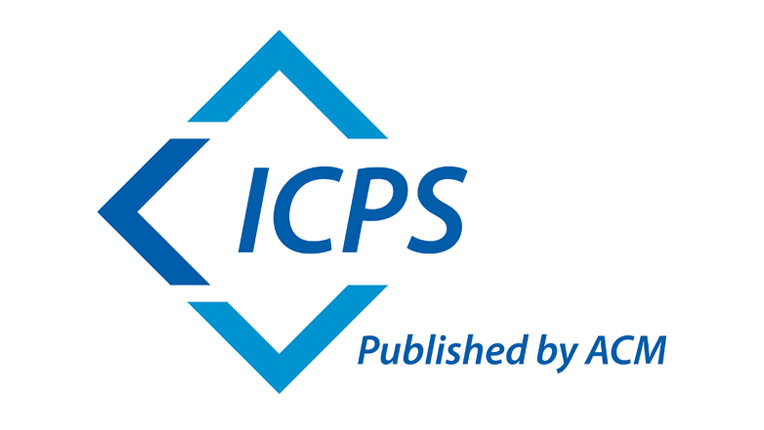
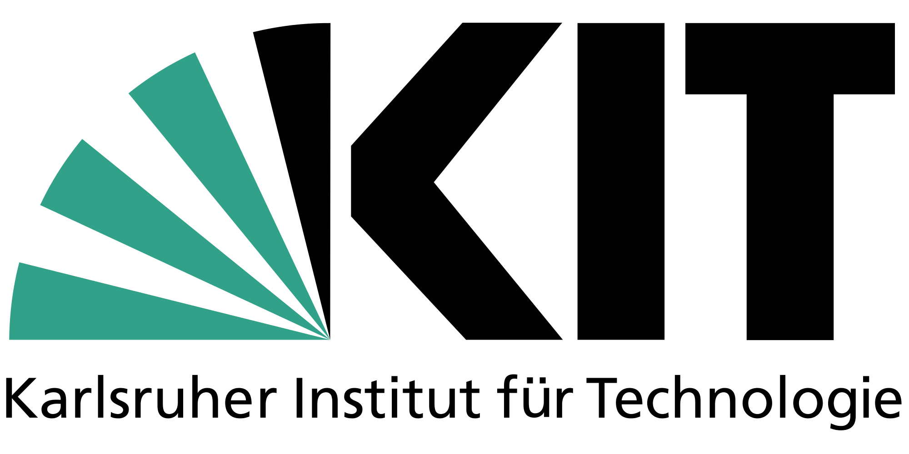
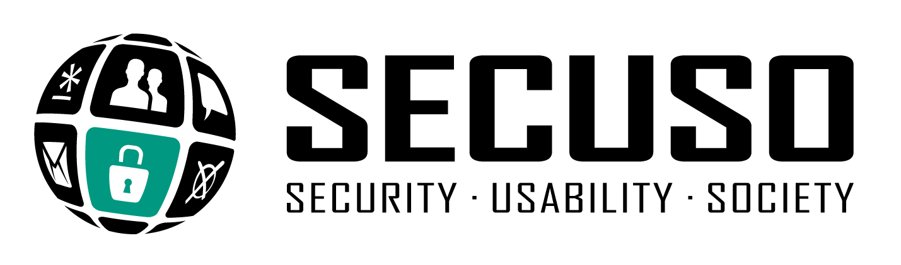

The European Symposium on Usable Security (EuroUSEC) serves as a European forum for research and discussion in the area of human factors in security and privacy. EuroUSEC solicits previously unpublished work offering novel research contributions or clearly articulated research visions in any aspect of human-centered security and privacy. The aim of EuroUSEC is to bring together an interdisciplinary group of researchers and practitioners in human-computer interaction, security, and privacy. Participants are researchers, practitioners, and students from domains including computer science, engineering, psychology, the social sciences, and economics.
Given the pandemic-struck world we currently live in, EuroUSEC 2021 will be a virtual-only event. It will take a slightly different shape than last year's virtual-only edition, in order to address points raised during the discussions after last year’s EuroUSEC and in reflection of the virtual academic events held last year:
We want EuroUSEC to be a community-driven event and would love to hear any questions, comments, or concerns you might have regarding these changes from last year. Therefore we want to encourage everyone to join the EuroUSEC Slack . You can also send us an email at eurousec21-chairs@lists.kit.edu.
Attendance of EuroUSEC is free of charge for everyone this year. However, registration is mandatory. At the end of registration you will be sent an email with all important infos and links.
Register Now »We invite you to submit a paper and join us at EuroUSEC 2021, which will be held on October 11 & 12, 2021 online. EuroUSEC 2021 will be an independent event with proceedings published by ACM.
We are excited to welcome original work describing research, visions, or experiences in all areas of usable security and privacy. We welcome a variety of research methods, including both qualitative and quantitative approaches.
We accept both longer papers on mature/completed work in a research track, as well as shorter papers on work in progress or work that has yet to begin in a vision track. This decision to accept both types of submissions, which started with EuroUSEC 2019, aims to include researchers at all stages of their career and at all stages of their projects.
Topics include, but are not limited to:
We have observed that the most effective workshops are those that encourage discussion between attendees. Each paper presentation will be followed by about 15 minutes of discussion to promote engagement and helpful feedback.
For accepted papers, at least one author must attend the workshop.
| Paper registration deadline (mandatory): | Monday, 7th June, 2021 (Anywhere on Earth) |
| Paper submission deadline: | Friday, 11th June, 2021(Anywhere on Earth) |
| Notification: | Thursday, 8th July, 2021 |
| Revision decision re-submission deadline: | Friday, 23rd July, 2021 (Anywhere on Earth) |
| Revision notification: | Friday, 6th August, 2021 |
| Camera ready: | 10th August, 2021 |
| EuroUSEC: | 11th & 12th October, 2021 |
Papers must be written in English and must be anonymized for review. EuroUSEC 2021 will use a double-blind review process such that reviewers are not revealed to the authors and authors are not revealed to reviewers. Please refer to your own related work in the third person, as though someone else had written it. This requirement also applies to data sets and artifacts. (For example, "We received data from the authors of Smith et al. [31] that we reused for this experiment.") Do not blind citations except in extraordinary circumstances.
All submissions must be original work. Authors must clearly document any overlap with previously published or simultaneously submitted papers from any of the authors. Simultaneous submission of the same paper to another venue with proceedings or a journal is not allowed. Serious infringements of these policies may cause the paper to be rejected from publication and the authors put on a warning list, even if the paper is initially accepted by the program committee. Contact the EuroUSEC chairs if there are questions about this policy.
All submissions must be use the ACM Word or LaTeX templates. These templates can be obtained on the ACM author submission information website. Due to the changes in the templates by ACM last year, submissions to EuroUSEC will be possible in either the new ACM one-column submission format or the old two-column format. Note that for the camera-ready submission to The ACM Publishing System (TAPS), you will need to use the one-column format, so it might be worth it to use it already for your submission. Please see below in the descriptions for the Research Track and the Vision Trackfor more details. Contact the EuroUSEC chairs if there are any questions.
Research Track: The research track is intended to report on more mature work that has been completed. The goal of the EuroUSEC's research track is to disseminate results of interest to the broader usable security and privacy community. Papers must not be more than 10 pages in length when using the two-column format or 16 pages in length when using the new one-column submission format, in both cases excluding the bibliography. Try to scale the length of the paper according to the contributions you describe therein. Authors have the option to attach to their paper supplementary appendices containing study materials (e.g., survey instruments, interview guides, etc.) that would not otherwise fit within the body of the paper. Reviewers are not required to read any appendices, so your paper should be self-contained without them. ACM also allows publication of additional supplemental materials and we want to encourage all authors to use this option to provide research artifacts if applicable (e.g., builds of own software used in the study).
Vision Track: The vision track is intended to report on work in progress or concrete ideas for work that has yet to begin. The focus in the vision track is to spark discussion with the goal to provide the authors helpful feedback, pointers to potentially related investigations, and new ideas to explore. Suitable submissions to the vision track include traditional work-in-progress pieces such as preliminary results of pre-studies, but also research proposals and position papers outlining future research. Papers must be up to 6 pages in length when using the two-column-format or up to 9 pages in length when using the one-column format, in both cases including the bibliography and with no appendices. Submissions to the vision track should have a title beginning with the prefix "Vision: ".
Please upload your submission via this link: HotCRP Submission

The chairs can be contacted at eurousec21-chairs@lists.kit.edu

